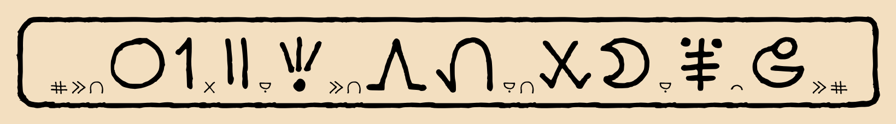
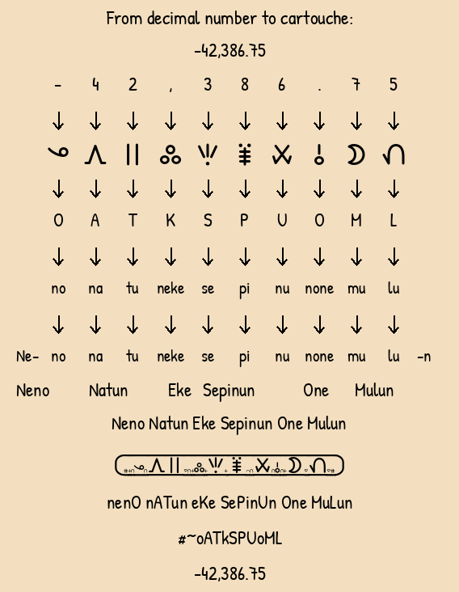

Toki Pona nanpa-linja-n decimal number system ilo pi pana nanpa

Welcome to the Toki Pona nanpa-linja-n decimal number system.
At last, nanpa-linja-n offers an elegant solution to the challenge of representing and communicating decimal numbers consistently. kama pona tawa lipu ilo pi nasin nanpa-linja-n pi nanpa linja n pi toki pona.
At last, nanpa-linja-n offers an elegant solution to the challenge of representing and communicating decimal numbers consistently. kama pona tawa lipu ilo pi nasin nanpa-linja-n pi nanpa linja n pi toki pona.
Overview
nanpa-linja-n encodes decimal numbers as proper names. In sitelen pona, these names are written inside numeric cartouches.
The content of a nanpa-linja-n cartouche is a pure encoding. Each decimal digit—and each numeric delimiter, such as a decimal point—has a designated sitelen pona glyph and a corresponding Latin-letter representation. This mapping is unique and reversible, allowing the original decimal sequence to be reconstructed exactly from either form.
nanpa-linja-n does not introduce any new Toki Pona words or add anything to the Toki Pona lexicon. It is a notation system only. Any “words” discussed below are identifier strings, or proper-name labels, derived from the encoded cartouche. When a nanpa-linja-n proper name is written in the Latin alphabet, each word begins with a capital letter.
The ten Toki Pona letters i, w, t, s, a, l, u, m, p, and j represent the decimal digits 0, 1, 2, 3, 4, 5, 6, 7, 8, and 9, respectively, within numeric cartouches.
The letters n and e are used to structure the encoding and make the proper name derived from the cartouche pronounceable. The letters o and k, used in various combinations, represent numeric punctuation and delimiters, such as the decimal point.
Every letter in the Toki Pona Latin alphabet therefore has a distinct function within nanpa-linja-n.
A simple example
How is 125 written as a nanpa-linja-n proper name?
Every nanpa-linja-n proper name for a number begins with Ne- and ends with -n. Each decimal digit maps to a unique Toki Pona Latin letter, which is expressed in the proper name using a designated syllable.
Using the relaxed mapping described below:
- 1 → w → wa
- 2 → t → tu
- 5 → l → lu
These syllables are concatenated between the initial Ne- and the final -n:
Ne + wa + tu + lu + n → Newatulun
Therefore, the nanpa-linja-n proper name for 125 is Newatulun.
See the decimal-to-cartouche diagram for a more detailed example.
The decimal number renderer can render any decimal number and produce an audio pronunciation. The encoding of decimal points and other numeric punctuation, together with the strict and relaxed digit mappings, is explained with examples on this page and in detail in the
nanpa-linja-n main documentation
.
To communicate "007", say "Neninimun".
(It is very easy to encode decimal digit sequences and preserve leading and trailing zeros.)
sina wile toki e "007" la, o toki e "Neninimun".
(ni li pona mute tawa awen e nanpa ala lon open en lon pini.)
Listen and try to guess the decimal numbers.
(It is very easy to encode decimal digit sequences and preserve leading and trailing zeros.)
sina wile toki e "007" la, o toki e "Neninimun".
(ni li pona mute tawa awen e nanpa ala lon open en lon pini.)
Listen and try to guess the decimal numbers.
Tool: Represent decimal numbers as nanpa-linja-n proper names and sitelen pona cartouches ilo pi pana nanpa (poka) + ilo sitelen pi poki nimi
Convert decimal numbers to nanpa-linja-n cartouches
ilo pi pana nanpa (poka) + ilo sitelen pi poki nimi
Practice: Listen to audio and learn to understand and pronounce nanpa-linja-n proper names o kute. o toki. o kama sona e nanpa-linja-n
Listen to nanpa-linja-n proper names, identify the decimal numbers,
and practise their pronunciation.
Open the nanpa-linja-n listening and pronunciation practice
o kute e nimi nanpa. o toki e nimi nanpa
Tool: English proper names tokiponizer o lukin e ilo pi ante nimi jan pi toki Inli tawa toki pona
English proper names tokiponizer
ilo ni li ante e nimi jan pi toki Inli tawa toki pona
Tool: Control how proper names are rendered on all pages of this site o lukin o awen e nasin pi sitelen nimi pona lon lipu ale
Control how proper names are rendered on all pages of this site
o awen e nasin pi sitelen nimi pona lon lipu ale
Tool: Upload UCSUR-compliant fonts for use in your own work with other tools on this site o lukin e o pana e sitelen UCSUR pona. sina ken kepeken ona lon pali sina lon lipu ale ni
Upload UCSUR-compliant fonts for use in your own work with other tools on this site
o pana e sitelen UCSUR pona. sina ken kepeken ona lon pali sina lon lipu ale ni
Tool: Video caption overlay editor → OTIO zip file download o lukin e ilo pi sitelen toki pona lon sitelen tawa
Toki Pona video caption overlay editor → OTIO zip file download
ilo pi sitelen toki pona lon sitelen tawa
Tool: Scrapbook editor o lukin e lo pi ante lon ijo
Scrapbook editor
o lukin e lo pi ante lon ijo
Tool: Layout editor → PNG image file download o lukin e lo pi ante lon ijo
Layout editor → PNG image file download
o lukin e lo pi ante lon ijo
Tool: Multiline text layout → sitelen pona glyphs → PNG image file download and PDF file download o lukin e ilo ni: sitelen toki pona mute-linja tawa sitelen pona
Multiline text layout → sitelen pona glyphs → PNG image file download and PDF file download
o lukin e ilo ni: sitelen toki pona mute-linja tawa sitelen pona
Tool: nanpa-linja-n cartouche calculator ilo nanpa pi poki nimi pi nanpa-linja-n
nanpa-linja-n cartouche calculator
ilo nanpa pi poki nimi pi nanpa-linja-n
Game: Solitaire game o lukin e musi Klondike
solitaire game
musi Klondike
Game: Memory cards game o lukin e musi pi lipu sona
memory cards game
musi pi lipu sona
Game: Arithmetic duel game o lukin e musi utala nanpa
arithmetic duel game
musi utala nanpa
Game: Cartouche spelling game o lukin e musi pi sitelen pona
cartouche spelling game
sitelen pona
Game: 15 puzzle game o lukin e musi pi leko tawa nanpa Newelen pi toki pona
15 puzzle game
musi pi leko tawa nanpa Newelen pi toki pona
Game: 2048 game o lukin e musi nanpa Neteninapen
2048 game
musi nanpa Neteninapen
Game: nanpa-linja-n guess the number game o lukin e musi pi alasa nanpa nanpa-linja-n pi toki pona
guess the number game
musi pi alasa nanpa nanpa-linja-n pi toki pona
Game: nanpa-linja-n maze game o lukin e musi pi nasin pi nanpa-linja-n lon toki pona
maze game
musi pi nasin pi nanpa-linja-n lon toki pona
Fonts: Toki Pona sitelen pona fonts o lukin e sitelen ona pi toki pona! mi kepeken sitelen ona mute ni
sitelen pona nanpa-linja-n fonts
o lukin e sitelen ona pi toki pona! mi kepeken sitelen ona mute ni
nasin nanpa nanpa-linja-n font
used by the nanpa-linja-n numeric cartouche examples
sitelen nanpa pi nanpa-linja-n li kepeken nasin sitelen pi nasin nanpa nanpa-linja-n
Info: Toki Pona nanpa-linja-n main documentation lipu sona suli pi nanpa-linja-n
nanpa-linja-n main documentation
lipu sona suli pi nanpa-linja-n
Other Sites: Useful Toki Pona sites
https://tokipona.net/
https://sitelenpona.net/
https://raacz.neocities.org/toki-pona/beginner-material/
https://sitelenpona.net/
https://raacz.neocities.org/toki-pona/beginner-material/



nanpa-linja-n mode nasin pi nanpa-linja-n
This table shows which syllables are allowed for each decimal digit when reading and writing a nanpa-linja-n proper name. In strict mode, each digit has only one accepted syllable. For example, digit 1 uses we, digit 2 uses te, and digit 3 uses se. In relaxed mode, some digits can also use extra syllables that mean the same digit. For example, digit 1 can use we or wa, digit 7 can use me or mu, and digit 8 can use pe or pi. The e, a, i, and u columns show the accepted syllables for each digit. The large glyph column shows the main sitelen pona glyph used for that digit. The small glyph row shows the small glyph associated with each vowel column.
In relaxed mode, for example, we will accept Nemun, as well as Nemen, to represent the number 7.
In relaxed mode, for example, we will accept Nemun, as well as Nemen, to represent the number 7.
| strict | relaxed | ||||||||||
|---|---|---|---|---|---|---|---|---|---|---|---|
| digit | e | a | i | u | large glyph | digit | e | a | i | u | large glyph |
| 0 | - | - | ni | - | ijo | 0 | - | - | ni | - | ijo |
| 1 | we | - | - | - | wan | 1 | we | wa | - | - | wan |
| 2 | te | - | - | - | tu | 2 | te | - | - | tu | tu |
| 3 | se | - | - | - | seli | 3 | se | - | - | - | seli |
| 4 | - | na | - | - | awen | 4 | - | na | - | - | awen |
| 5 | le | - | - | - | luka | 5 | le | - | - | lu | luka |
| 6 | - | - | - | nu | utala | 6 | - | - | - | nu | utala |
| 7 | me | - | - | - | mun | 7 | me | - | - | mu | mun |
| 8 | pe | - | - | - | pipi | 8 | pe | - | pi | - | pipi |
| 9 | je | - | - | - | jo | 9 | je | - | - | - | jo |
| small glyph | en | small glyph | en | ala | ike | uta | |||||
#~n